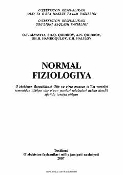

NFTibbiyot oliy o'quv yurtlari talabalari uchun mo'ljallangan normal fiziologiya fanidan darslik.
Ushbu darslik tibbiyot oliy o'quv yurtlari talabalari uchun mo'ljallangan bo'lib, unda inson organizmining hayotiy faoliyati, a'zolar va tizimlar funksiyalari batafsil yoritilgan. Kitobda fiziologiyaning klassik nazariyalari bilan bir qatorda zamonaviy tekshirish usullari va ilmiy kashfiyotlar ham o'z aksini topgan.